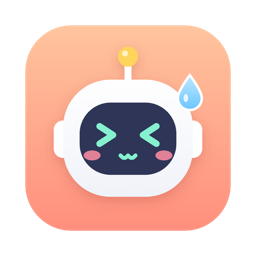

이 단계에서 하는 일
아직 안 함
불러오는 중입니다...
👉 할 일

에이아이고 첫걸음
준비하고 있어요. 잠시만 기다려 주세요…
🎉 첫걸음을 모두 마치셨어요! 이제 AI 비서와 매일 쓸 수 있어요.
에이아이고 앱 설치는 컴퓨터에서 해 주세요. 이 주소를 컴퓨터에서 열어 주세요.
AI 비서를 설치한 뒤 매일 부딪히는 수첩·공책·사용량 이야기를 여섯 수업으로 정리했습니다. 위에서부터 차례로 읽어 보세요.
낯선 단어를 찾아보세요. 다른 화면에서 밑줄 친 단어에 마우스를 올리거나 누르면 바로 풀이가 나와요.
이 웹 페이지는 첫걸음만 도와드려요. 컴퓨터에 에이아이고 앱을 깔면 AI 비서 앱 설치부터 이런 것까지 버튼 하나로 해 드려요.
Mac · Windows 컴퓨터용이에요. 휴대폰에는 깔 수 없어요.
화면 왼쪽 위 사과 모양() 메뉴 → 이 Mac에 관하여를 누르세요. "칩"에 Apple이라고 쓰여 있으면 요즘 Mac, "프로세서"에 Intel이라고 쓰여 있으면 예전 Mac이에요.
누르면 파일이 바로 내려받아져요. 보통 다운로드 폴더에 들어가요.
무료로 나눠 드리는 앱이라 Apple · Microsoft의 유료 인증을 받지 않았어요. 그래서 처음 한 번만 컴퓨터가 "확인되지 않은 앱"이라며 막아요. 아래대로 한 번 열면 다음부터는 그냥 열려요.
.dmg 파일을 두 번 누르고, 앱 아이콘을 응용 프로그램 폴더로 끌어다 놓아요..exe 파일을 두 번 눌러요.다른 버전이나 파일 목록은 내려받기 페이지(GitHub)에서 볼 수 있어요.